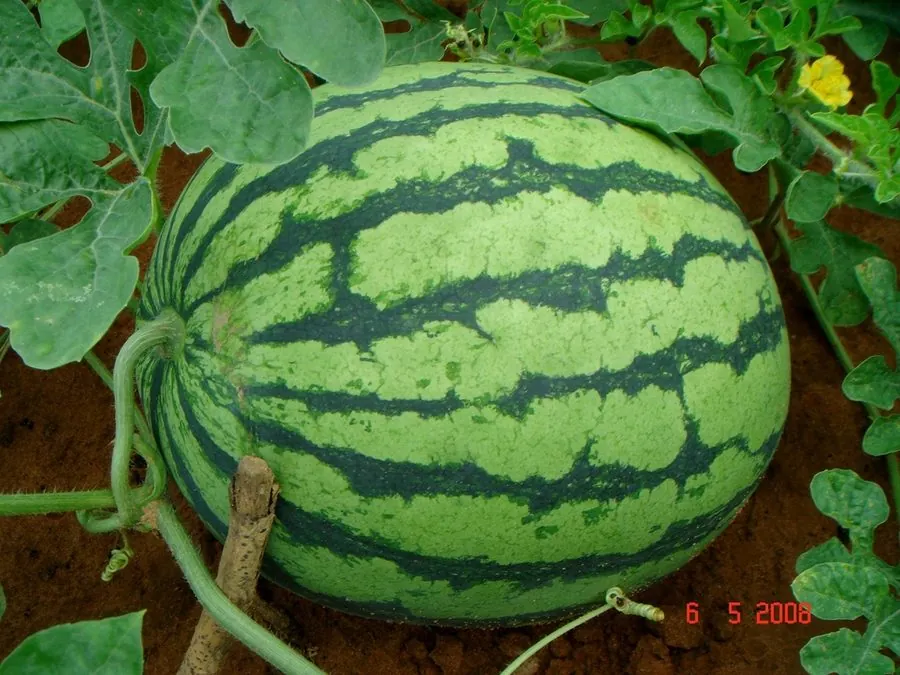

农作物与经济植物 · 植物界
西瓜 Citrullus lanatus

西瓜的果实甘甜多汁，是夏季消暑的主要水果，果皮可入药，种子可食，我国是世界上最大的西瓜生产国。
- 分类
- 门被子植物门纲双子叶植物纲目葫芦目科葫芦科属西瓜属
- 栖息环境
- 热带、亚热带与温带的沙壤土，喜高温干燥、光照充足，耐旱
- 地理分布
- 原产非洲热带，现主产于中国、印度、土耳其、伊朗等地
- 保护级别
- 暂无评估（栽培作物）
物种志
西瓜是一年生蔓生草本，茎匍匐，有棱和柔毛，具卷须。叶片羽状深裂，裂片不规则，表面粗糙。花单性同株，黄色，五瓣，雌花子房下位，柱头三裂。果实为瓠果，圆形或椭圆形，大小不一，果皮有绿、深绿条纹或黑色，果肉有红、黄、白等色，多汁甘甜，内含许多扁卵形种子。
西瓜原产非洲热带地区，约 5000 年前被驯化，后传入中亚、印度和中国，如今世界各地广泛栽培。它喜高温、干燥、光照充足，耐旱性强，适宜在疏松排水良好的沙壤土中种植，多需搭架或铺地栽培。西瓜果实甘甜多汁，富含糖分、水分和维生素，是夏季消暑的主要水果；果皮可入药（西瓜翠衣），种子（西瓜子）可炒食或榨油。中国是世界上最大的西瓜生产国，山东、河南、新疆等地是主产区。
形态与习性
- 茎匍匐蔓生，有卷须
- 叶羽状深裂
- 果实圆形或椭圆形，果肉红、黄或白
- 花黄色，雌雄同株
- 用途夏季水果，果皮入药，种子可食
- 特性耐旱喜高温
趣味知识
- 西瓜原产非洲，约 5000 年前被驯化。
- 西瓜皮可入药，中药称“西瓜翠衣”，能清热解暑。
- 中国是世界上最大的西瓜生产国，产量居全球前列。